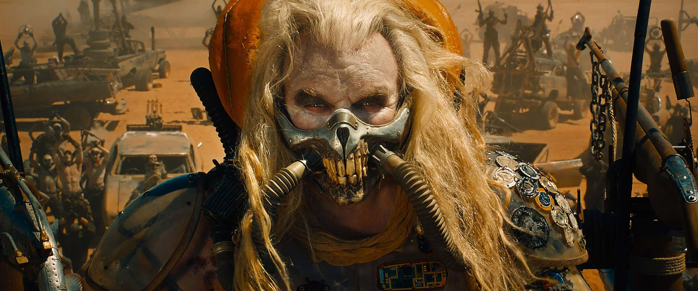
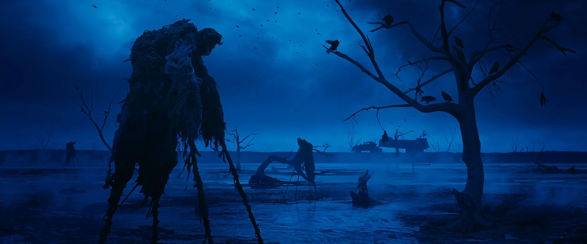
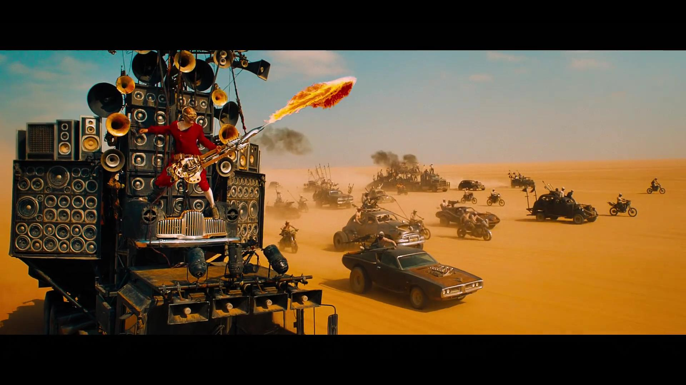
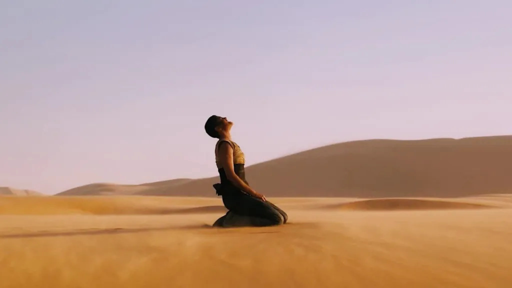
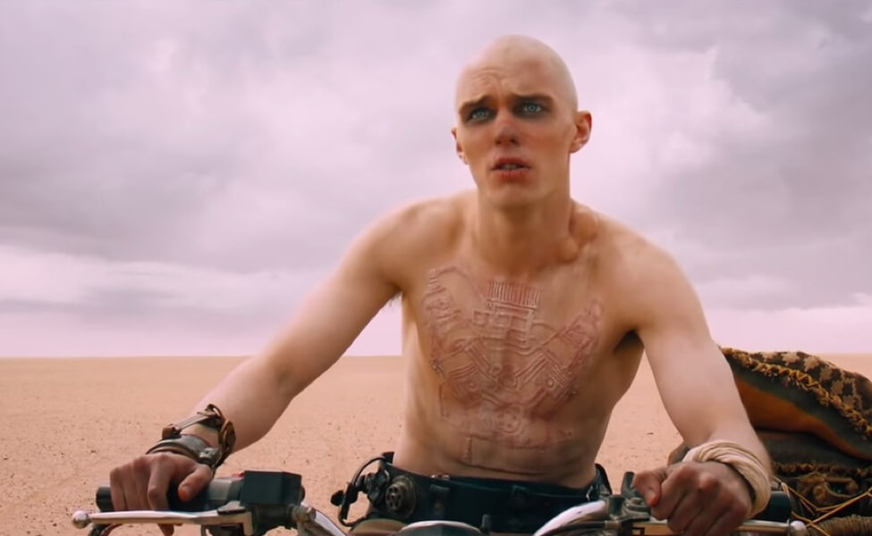
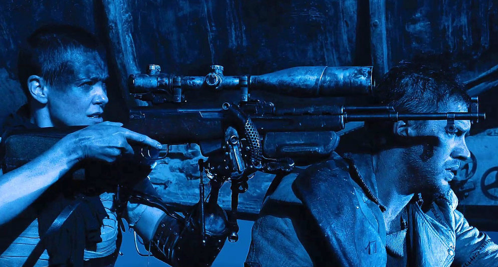

Before we get into things I know I'm late to the party by 9 years. In my defense I was too young to see this film when it came out in theatres, and the film only recently became relevant in the public conscience again. I will be releasing a review of Furiosa: A Mad Max Saga soon, however I would like to appreciate this film first as it is one of the most flawlessly executed films I have seen in a while. So, whithout further ado this is my review of Mad Max: Fury Road. Warning: SPOILERS

Let's start by looking at the context behind the film's creation, because I find this almost as fascinating as the film itself. George Miller orginally created the Mad Max franchise with his writing partner Byron Kennedy in 1979. Its success was so unprecedented as the first film was an indie production. The first film was ranked for decades as the most profitable film ever created. The trilogy garnered a loyal cult following which kept the series in their hearts even after Miller left the franchise after the untimely death of Kennedy. Even after this tragedy, Miller found himself coming to the franchise with fresh ideas years after he left it.
Fast forward to 2015, and we see the release of Fury Road, a film built on the blood sweat and tears of its cast and crew. The film had already gone through a myriad of delays since 2001, going through several iterations. The filming was reportedly gruelling as most of the it took place in the Namibian Desert. The actors also had to deal with drastically shifting weather patterns, and their own interpersonal relationships with the rest of the cast. Hardy and Theron famously felt aggresive animosity towards one another, which would manifest itself in explosive feuds between the two. The film's gruelling stunts were also something which required meticulous planning to pull off. Much of it was done practically, contributing to the brutal atmosphere of the film. After being cut short before the completion of the film, Warner Bros. had a change of management which resulted in George being granted 3 weeks of reshoots to finally finish what he started. Fury Road hit theatres on 14th May 2015 (UK).

First impressions: I was enraptured when I saw this film. Something about the way the action is so seamlessly executed and grounded carries the film's runtime and results in one of the most climactic endings I can think of in recent memory. The film's decision to only use dialogue when necessary is far more of a tool than first comes across. Much of the action says things about the characters, but also develops the world in far more intricate ways than is done by just the book ends of the film.
Let me get the negatives out of the way before going any further. I was not a fan of some of the editing of the film. Don't get me wrong, I am aware that much of this film would not be so good without the editors' room. However, there were occasions in which I found the jarring editing style quite distracting. Especially during Max's hallucinations, I feel as though there were better ways to convey the information without trying to make it feel like a budget horror movie. Also, I believe that much of the film's handling of Max himself left much to be desired. Tom Hardy himself admitted that he was not in a good place during the making of this film. In my opinion his acting is sufficient for what the film wants to convey, but I think that his motivations are very dissonant. This is fine as he is a reluctant hero who tries to go against his own morals, but I think that his relationships with Furiosa and the wives felt quite rushed.
Alright, now to the things people have already heard about this project. It is flawlessly paced, the tonality is balanced, and the worldbuilding is some of the most airtight I have seen in a franchise as of recent. I mean it when I sawy that this is a world which feels like a true progression of society after a slow apocalypse. I stress slow as the harsh wasteland of Mad Max is as a result of climate change, which is something which already seems like it is so unbeatable now, purely for the fact that many people do not have the luxury to worry about it, and those who do are concerned with other affairs. This world is violent and unforgiving and for once in this kind of environment I believe that. So many films fall into the trap of trying to make their environments seem hostile without actually focusing on why it is so hostile. Hope is almost non-existent in this reality and that is clear form the get go.
I believe that as an allegory for the climate crisis this film succeeds brilliantly, but as a hero's journey it takes a very subdued and traditional approach to it, and for once that is relieving to see. Mad Max is a fairly simple premise - policeman sees the world dry up in front of him and goes rogue while blowing up cars. This reflects in the simplicity of this movie's narrative, and the writing of this film never talks down to the audience or underestimates them. It instead presents these extremely complex characters and peels back their layers one by one until you have a story which fundamentally is about perseverence.
We're getting into spoiler territory now. This film begins with Max - plagued by memories of his family - attempts to escape his captors and fails miserably, becoming the blood bag of Nux, a warboy who is shown to be stuck in a zealous mindset of dying heroically on the Fury Road, and finally reaching Valhalla. On a sidenote, it is an interesting choice to make the afterlife of Immortan Joe's people the mythical Scandinavian realm. This makes sense however, as the worship of mythologies and the rejection of contemporary religion works well with the mindset of these rev-heads, as they stem from a deeply rooted hair metal culture. The film introduces us to Furiosa, my favourite character in the film. Theron does a stellar job as the focussed Imperator, presenting a unique stoicism and understanding to the point where her silent processing speaks volumes about her character. The film is quick to show us the respect which Furiosa commands of the war boys who travel with her, depicting a reliable and concentrated manner. As she goes off course, hiding away the wives on the war rig, the pursuit begins explosively - giving us probably the most iconic scene in the film.
Later on in the film, we get the kick-off to Furiosa and Max's relationship, starting with the two thrashing at one another in the sand while the camera traces the shifting of power between the two, finally resulting in Max gaining the upper hand. As the film progresses, the rapport between the two becomes more endearing if anything. I would like to focus on Nux for a bit, because although the arc of a zealous soldier learning the true value of human connection is overdone, it still managed to strike a chord with me, due to how it allows the audience to sympathise with Nux's position. This is reflected in moments such as when the rig gets stuck in the mud and they must use a tree to hoist it out. Here, it is shown that Nux does not know what a tree is, as he doesn't have the language to describe it. These moments of Nux's naivity towards the world develops our sense of injustice between Immortan Joe and the warboys.
Furiosa eventually grows to trust Max and Nux. She also is able to instantly understand Max's condition, sympathising with his grief and holding him to a position of utmost respect in her mind. About 2/3 through the film, we meet a group of women surviving out in the desert off of their own brazenness and knowledge. They quickly take a liking to the wives, imparting knowledge upon them, while also carrying on the legacy of the green place which was taken from them. Furiosa at this point finally receives a shred of hope for the future, thinking that her heritage is still alive and lives on in the place she once knew. In my opinion the best shot of the film comes her. After learning of the destruction of the green place which she has been chasing for so many years now, Furiosa takes off her mechanical arm and staggers into the desert, where she collapses and lets out a blood-curdling, agonising scream.
Finally, the conclusion of the film comes when Max is faced with a choice, move on from the group and continue with his endless trek across the Aussie outback, or go back and do his children justice. He informs the group of the only hope of survival - return to the place they've been trying to escape all their lives. They return back to the canyon, still pursued by Joe's forces, and the crew escape one by one from the war rig to the vehicle they have just captured in front of them, until the only one left is Nux, now driving the war rig.
This leads up to Nux's arc finally ending in a death so respectable - for lack of a better term - that it is one of the first things I think of when it comes to this film. Until this moment "Witness!" or "Witness me!" have been terms used by the warboys right after inhaling chrome spray paint to get a quick high. This is done before a warboy's death, stemming from the idea that they are awaited in Valhalla and will die shiny and chrome. This "good death" is what warboys dream of all their lives, and is Nux's goal for the better part of the film's runtime. Over the course of the film he has experienced several disappointments in front of Immortan Joe, leading to him being found curled up and alone at the top of the war rig. However, as he realises that he has failed his duty as a warboy, his mind is finally freed and he swiftly develops a relationship with one of the wives. This relationship is strengthened over the course of the film, and when he is finally in control of the war rig and can allow the escape of the rest of the group, he gives up his life. His last words are "Witness Me". But not to his fellow soldiers, not to Immortan Joe, not painted with chrome, but to the wife he has now bonded with.
The triumph at the end of the film is bittersweet as Max still, after all he's been through with these people, wades through the crowd to continue on his own journey. However, there is a sweet catharsis to the wives and Furiosa being hoisted up into the air while the citizens of the Citadel praise them, sunlight painting their figures. This is what makes this film so badass. It's one of the coolest feelings being able to see that the selfless decision Max made to confront the difficulty of emotional risk has finally paid off, and after the relentless beating that this environment has dished out to our motley band of human beings, it is so cathartic. Overall, I believe that this film is something which I will treasure for a while, as it is a project which feels like a classic, but was release in my lifetime. The way that it was able to bring unapologetic, metalhead violence back while still telling an effective story is a testimony to the skill of these filmmakers. I would highly recommend this film as a lesson in visual storytelling, of which it is a masterclass in, and as a testimony to the power that aesthetic can convey as it is always the result of culture and the lives of people who worked for our existence today.
- Rehan